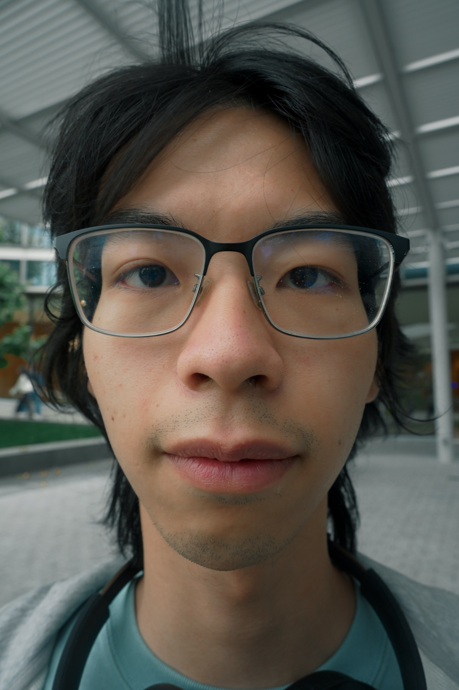
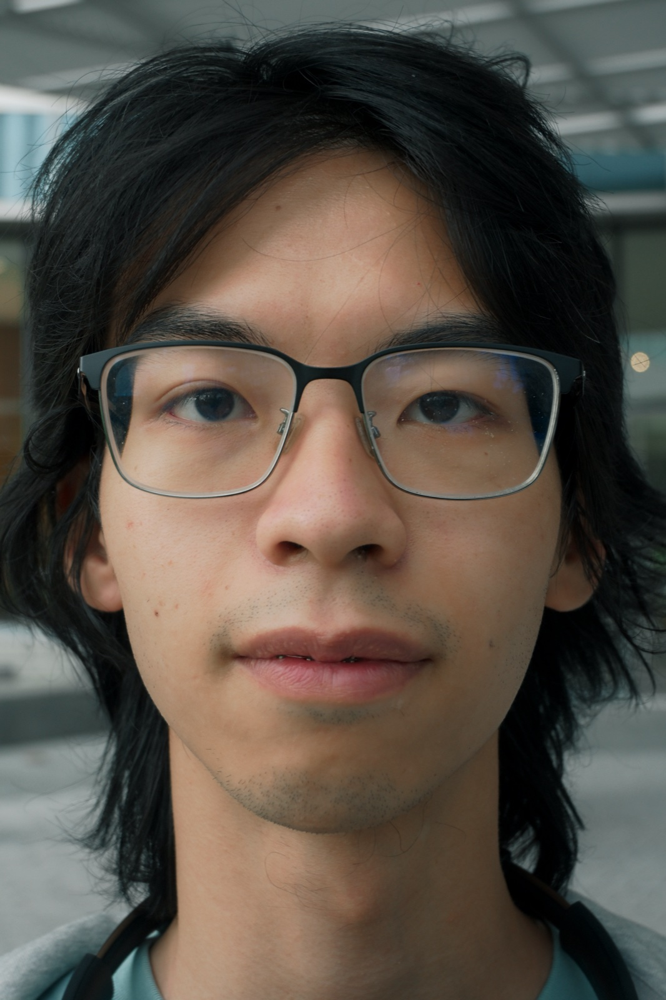
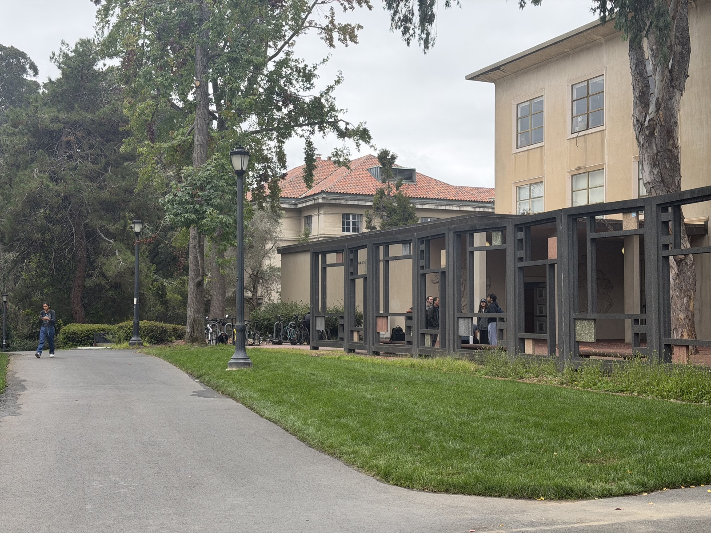
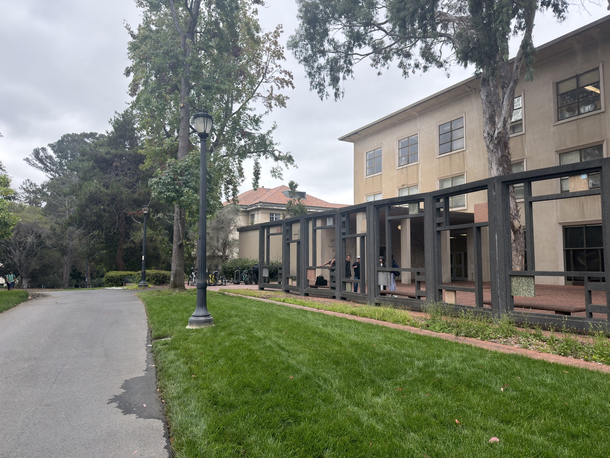
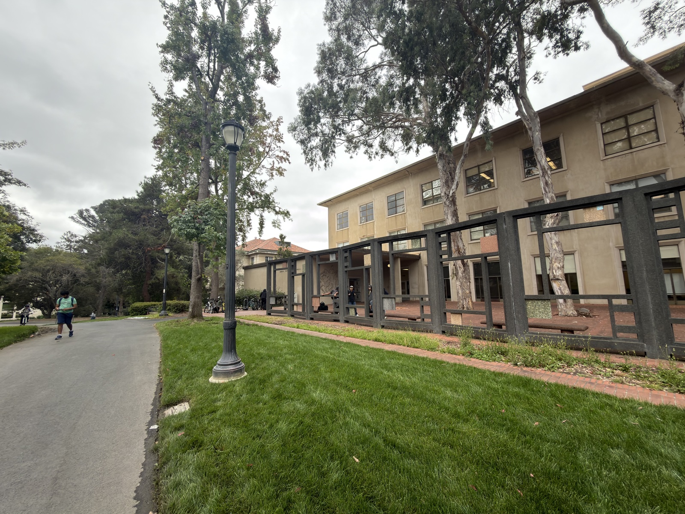
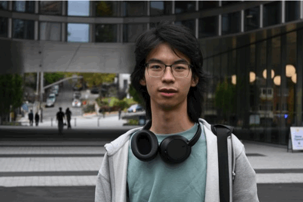

Took multiple portraits of my friend using his camera with 16mm to 50mm lens


Building in Berkeley Campus photos taken by my iPhone 17 Camera



Took a dolly zoom shot of my friend in front of the CDSS Building using my friend's camera with 16mm to 50mm lens
